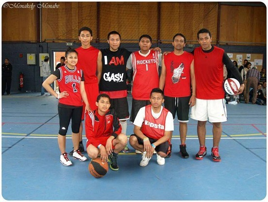
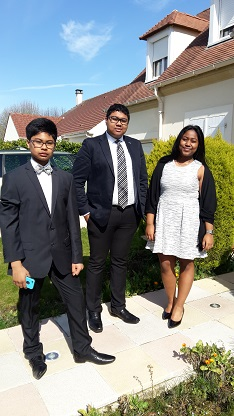

Photos
Quelques photos

Jam Session
Août 2017
Jam Session avec des amis pendant un mariage.

Equipe de basket malgache
Mai 2016
Equipe de basket lors d'un tournoi organisé par la branche scout de mon église.

Avec mon frère et ma soeur
Avril 2017
Photo prise le jour de Pâques après le culte à l'église.